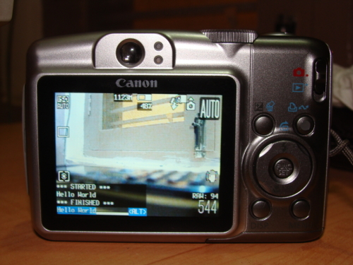
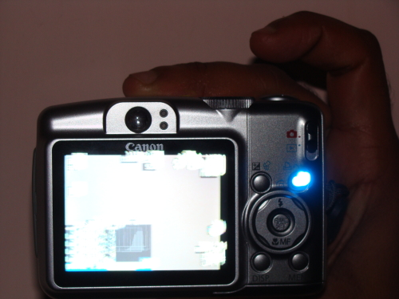
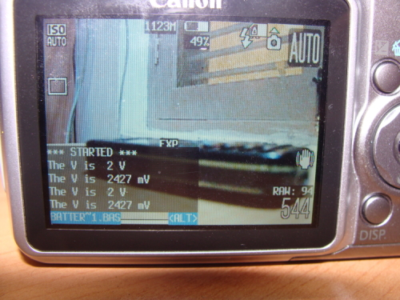

Hacking a Canon A720IS digital camera with CHDK on GNU/Linux
By Sujith H
This all started with a Slashdot article which described the amazing features of CHDK (Canon Hacking Development Kit). The article re-ignited my ambition to buy a camera and explore its full potential. I decided to go for the Canon A720IS, which supports CHDK. In this article I would like to share the work that I did to compile CHDK in GNU/Linux, install it, and explore its scripting capabilities.
Installation procedure
I downloaded the latest CHDK source from its Subversion repository to a 'chdk' subdirectory in my home directory:
cd
svn co https://tools.assembla.com/svn/chdk/trunk
Since CHDK runs on a platform that's different from the one we're compiling it on, we need a cross compiler. For that, I downloaded binutils (version 2.17) and the GCC compiler (version 3.4.6); I then created a directory called 'arm-elf' and one called 'chdk_cross_compiler' in my home directory, and untarred 'binutils' and GCC inside the latter.
Building 'binutils' required the following steps:
1) cd ~/chdk_cross_compiler/binutils-2.17
2) ./configure --srcdir=../binutils-2.17 --target=arm-elf --prefix=${HOME}/arm-elf
3) make
4) make install
Next, I added ~/arm-elf/bin to my PATH:
export PATH=${HOME}/arm-elf/bin:$PATH
Now, to compile GCC:
cd ~/chdk_cross_compiler/gcc-3.4.6
Next, I applied a patch from 'chdk' which was at ~/chdk/trunk/tools/patches/gcc-3.4-arm.diff.
patch -p0 < ~/chdk/trunk/tools/patches/gcc-3.4-arm.diff
Now I created a directory named gcc-3.4.6-arm-elf in ~/chdk_cross_compiler and built GCC so that it compiles for the ARM processor as the default target:
cd /home/sujith/chdk_cross_compiler/gcc-3.4.6-arm-elf
../gcc-3.4.6/configure --srcdir=../gcc-3.4.6 --target=arm-elf \
--enable-multilib --enable-languages=c --enable-clocale=gnu \
--disable-libm --disable-libc --disable-threads \
--disable-nls --disable-libssp --disable-intl --disable-libiberty \
--with-cpu=arm9 --with-newlib --prefix=${HOME}/arm-elf
unset LIBRARY_PATH
unset CFLAGS
make
make install
Now that the cross compiler is ready, it's time to compile the CHDK.
cd ~/chdk/trunk
Since my camera is a Canon A720 IS, I uncommented these two lines of makefile.inc:
PLATFORM=a720 PLATFORMSUB=100c
and compiled it using
make fir
This created a file called DISKBOOT.BIN in my ~/chdk/trunk/bin directory, which I needed to copy to the memory card of the camera. For that, I needed to format the SD-Card to FAT-16, which I achieved in the following step:
mkdosfs -F 16
As a final step, I needed to make the card bootable by editing its FAT partition. I did this by using hexedit (make sure that the SD card is not mounted while issuing this command). Before we do that, however, we need to find out which device was mounted by using the 'mount' command; for me, it was /dev/sda1.
umount /dev/sda1 hexedit /dev/sda1
In hexedit, I toggled ASCII mode and wrote "BOOTDISK" (without double quotes) at offset 0x40; I then mounted the SD Card again and copied the DISKBOOT.BIN file to the root directory of the SD card, set the SD card write lock (this is a small lock button on the SD Card itself), and inserted the card into camera. The camera booted with the CHDK and displayed a message showing the CHDK firmware. I was now the proud owner of a CHDK-powered camera! I do find it interesting, by the way, that the SD card is write-locked in the camera, but the photos are still written to the card.
Now, switching the camera into the alt mode and pressing the menu button (my camera has a menu button, for other models it might be different) displays the CHDK options: play a game, load a file, Raw image, Histograms, etc.
Scripting
There is a small interpreter in CHDK named UBasic. Let's begin with a 'hello world' script. The filenames will have a .bas extension (i.e., file1.bas).
@title Hello World print "Hello World"
Here '@title' refers to the title of the program; if it's not given, the filename will be created by CHDK. Copy the program to the chdk/scripts directory on the SD card and load it. On my camera, I had to press the shoot button to run the script. You can see the output on the screen:

In order to blink the orange LED of my camera I wrote the following code:
for n=1 to 5
print "Led blink ",n
gosub "ledblink"
next n
:ledblink
set_led 7 1 60
sleep 1000
set_led 7 0
set_led 8 1 60
sleep 1000
set_led 8 0
return
'gosub' is used to go to a subroutine; here the subroutine is 'ledblink'. 'set_led' is the command used to turn the LED on and off, and '7' is the 'set_led' argument which means the orange LED. Similarly, '8' represents the blue LED.
Blue LED is set on:

In order to shoot the photos with a regular interval of 5 seconds, I wrote this small peice of code.
for n=1 to 6
sleep 5000
print "shoot ",n, "of ",6
shoot
next n
To put the camera in 'raw' mode, the 'set_raw' command is used. The following code could be used to set the raw mode in the camera and then take a shot.
set_raw 1
sleep 1000
shoot
sleep 1000
set_raw 0
You could check the battery voltage using the following code; the voltage is displayed in millivolts.
for n=1 to 10
a=get_vbatt
print "The V is ",a/1000, "V"
print "The V is ",a, "mV"
sleep 9000
a=0
next n

These are some of the hacks that I've done using GNU/Linux and my Canon camera. If you are ready to experiment with your CHDK-compatible camera, this is the right time to do it. A friendly warning - these hacks are not for faint-hearted!!!
Reference
The CHDK Wiki was very helpful during my hacking and the writing of this article. You can go through it here.
Talkback: Discuss this article with The Answer Gang
I have been in the free software community for the past five years, and have always enjoyed the freedom provided by free software. I thank my guru, Mr. Pramode C.E, who had introduced me to the Free Software community. I completed my B. Tech from Government Engineering College Palakkad (Kerala, India). I work with ElinaNetworks Ltd., Bangalore as an R&D Engineer. My blog is at http://sujith-h.livejournal.com. My areas of interest include Python and C.